Composable Plotting with autoplot and autolayer
Source:vignettes/autoplot-autolayer.Rmd
autoplot-autolayer.RmdOverview
pladdrr provides autoplot() and autolayer()
methods following the ggplot2 convention for visualizing acoustic
data.
-
autoplot(object)- Creates a complete ggplot for a single Praat object -
autolayer(object)- Returns layers to add to an existing plot
This pattern allows combining multiple objects in one plot:
Basic Usage: Single Object Plots
Each Praat object type has an autoplot() method that
creates an appropriate visualization.
# Load example sound
sound <- Sound$new(system.file("extdata", "test.wav", package = "pladdrr"))Sound Waveform
autoplot(sound)Formants
# Formant extraction may fail on some sounds (e.g., if too short or no voiced content)
formant <- tryCatch(
sound$to_formant_burg(),
error = function(e) {
message("Formant extraction failed, using synthesized vowel")
kg <- klattgrid_create_from_vowel(duration = 0.3, f0start = 120)
kg$to_sound()$to_formant_burg()
}
)
autoplot(formant, max_formant = 4)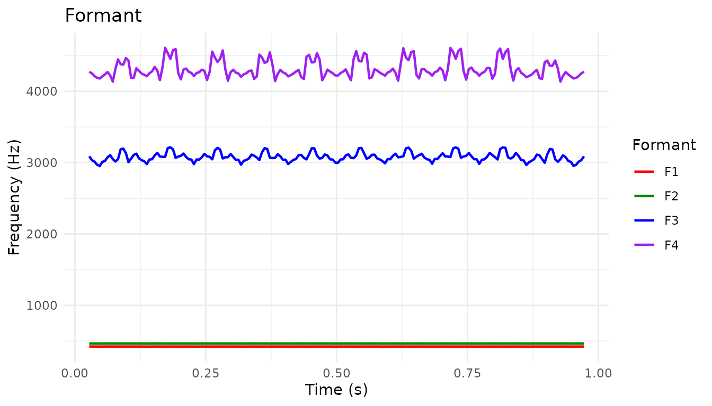
Pitch Tier
A PitchTier stores sparse, hand-editable F0 points (as
opposed to Pitch’s dense per-frame contour) — it’s what you
get from pitch$down_to_pitch_tier(), and it’s the object
type Praat scripts manipulate when resynthesizing prosody.
pitch_tier <- pitch$down_to_pitch_tier()
autoplot(pitch_tier)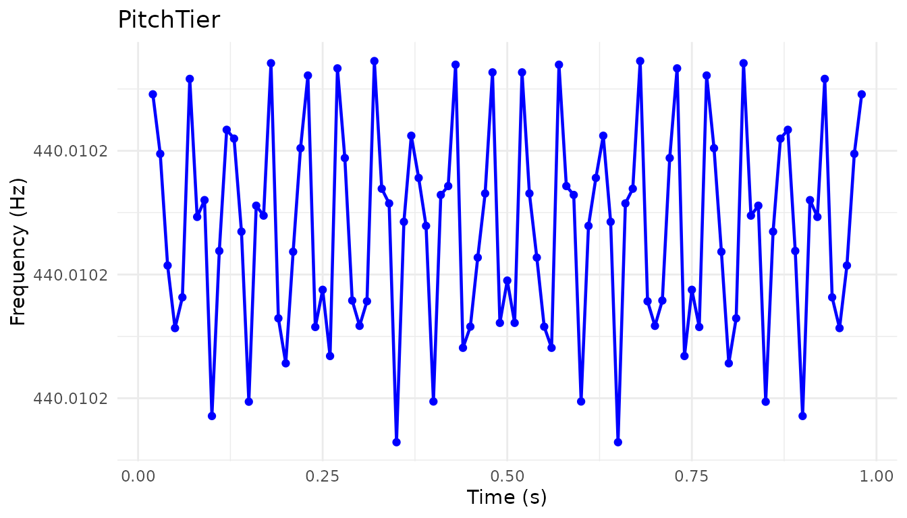
Overlay the sparse tier points on the dense pitch contour with
autolayer():
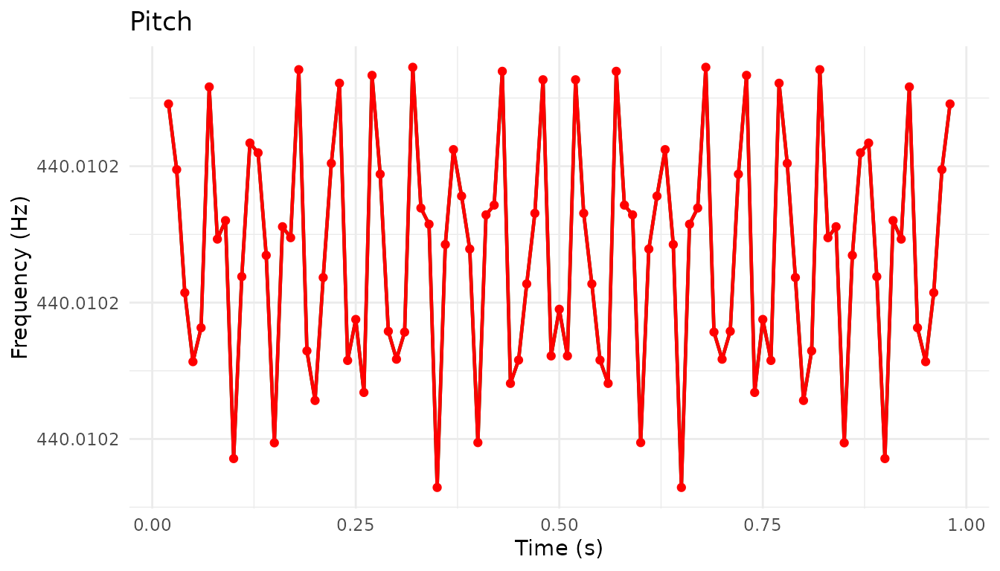
Formant Grid and Formant Tier Styles
A FormantGrid holds formant frequency points directly
(the editable structure behind Klatt synthesis), while a
FormantTier is a downsampled view of a Formant
object. FormantTier’s style argument switches
between "speckle" (default, one point per Praat-selected
candidate) and "line" (one interpolated point per fixed
time step).
grid <- FormantGrid(tmin = 0, tmax = 1, number_of_formants = 3)
grid$add_formant_point(1, 0.5, 500)
grid$add_formant_point(2, 0.5, 1500)
grid$add_formant_point(3, 0.5, 2500)
autoplot(grid)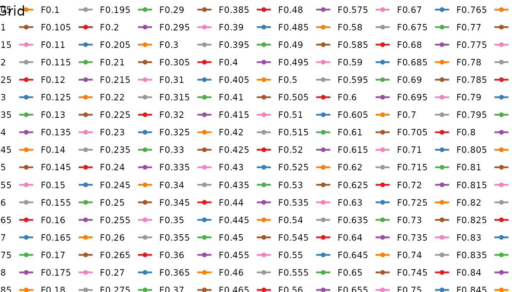
formant_tier <- FormantTier$from_formant(formant)
autoplot(formant_tier) # style = "speckle" (default)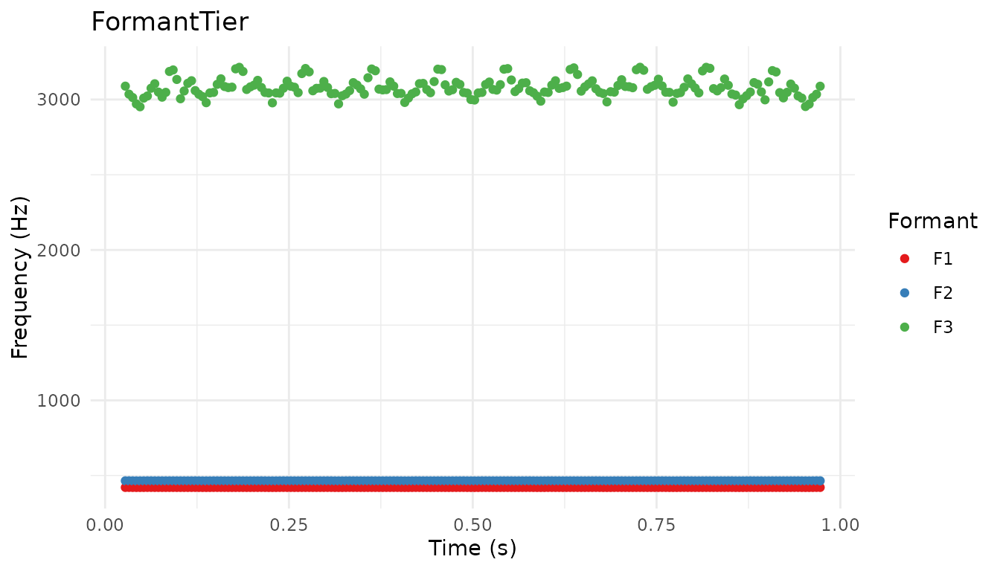
autoplot(formant_tier, style = "line") # interpolated at a fixed time step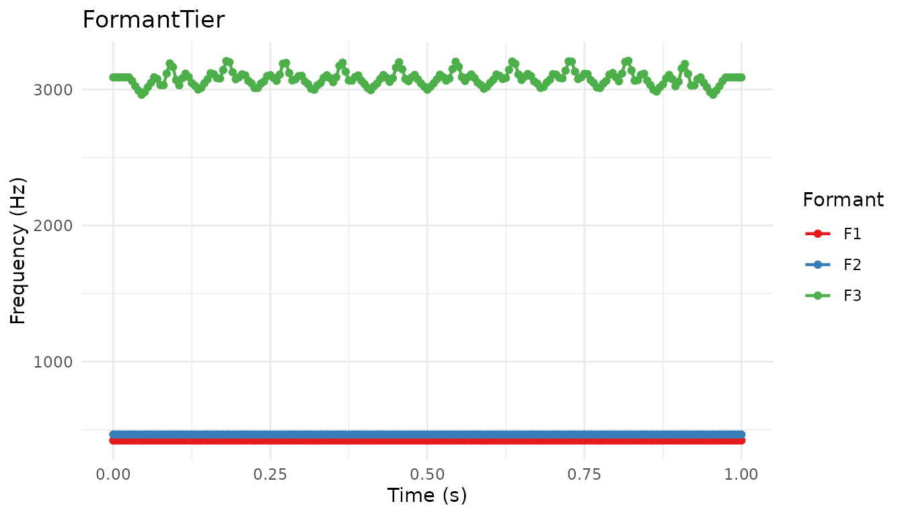
Cepstral Analysis
Cepstrum supports two views of the same data via its
power argument: the default raw (signed) cepstrum, and a
power = TRUE dB view used for peak picking.
PowerCepstrogram extends this over time and underlies
CPPS-based voice-quality measures.
cepstrum <- sound$to_cepstrum()
autoplot(cepstrum) # raw view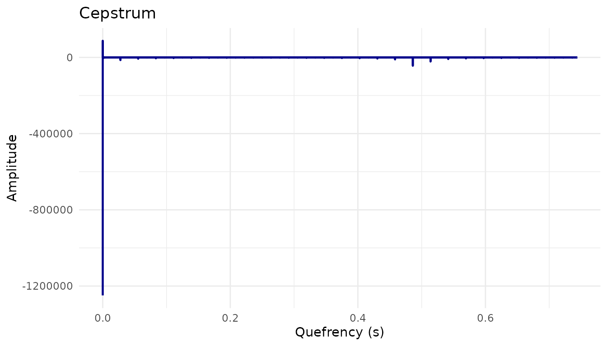
autoplot(cepstrum, power = TRUE) # power (dB) view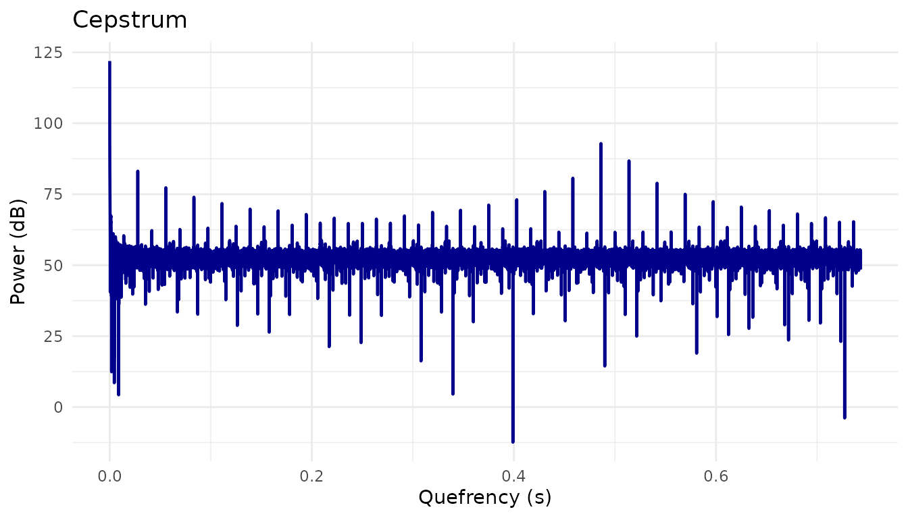
power_cepstrogram <- sound$to_powercepstrogram()
autoplot(power_cepstrogram)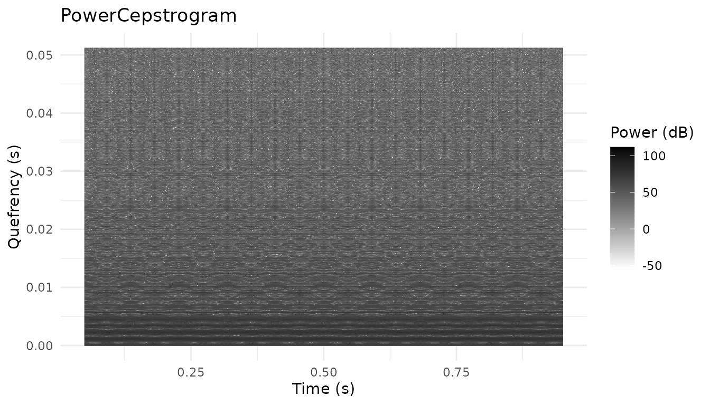
Composing Multi-Layer Plots
Combine objects using autolayer().
Spectrogram with Pitch and Formants
autoplot(spec, to_freq = 5000) +
autolayer(formant, max_formant = 3) +
autolayer(pitch, color = "white", geom = "point")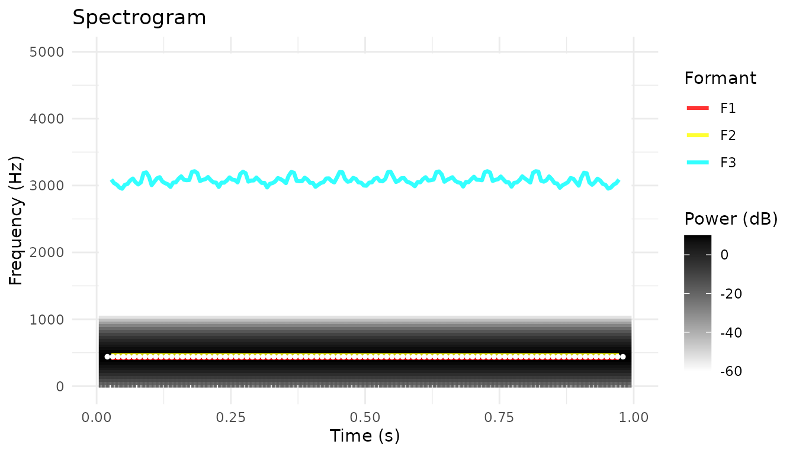
Sound with Pitch Overlay
Overlay pitch points on waveform (useful for seeing voicing):
# Scale pitch to amplitude range for overlay
pitch_df <- pitch$as_data_frame()
pitch_df <- pitch_df[!is.na(pitch_df$frequency) & pitch_df$frequency > 0, ]
autoplot(sound) +
geom_point(
data = pitch_df,
aes(x = time, y = 0),
color = "red", size = 0.5, alpha = 0.5
)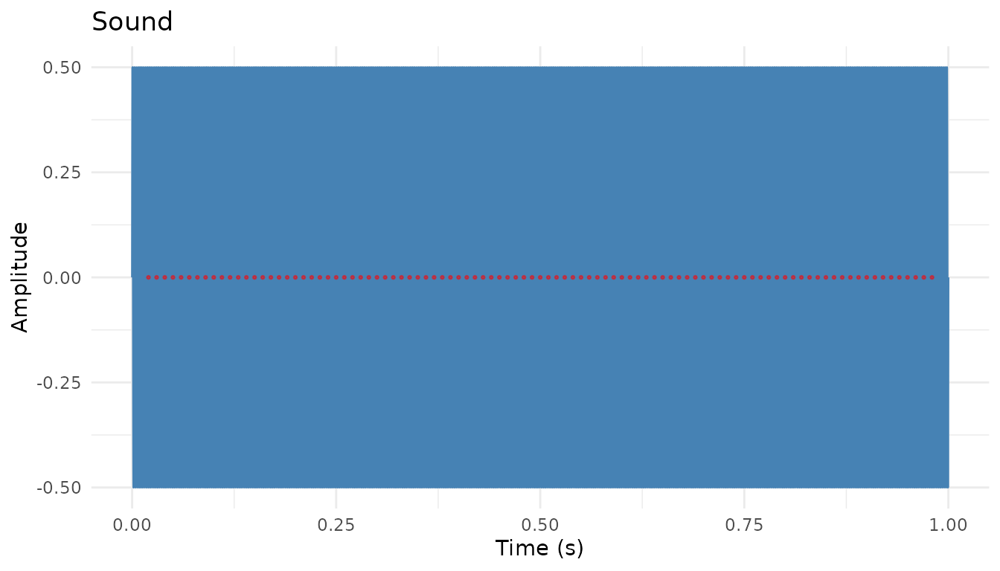
Customization with ggplot2
All autoplot/autolayer methods return ggplot2 objects, so you can customize freely.
Custom Themes
autoplot(pitch) +
theme_classic() +
labs(
title = "Fundamental Frequency",
subtitle = "Extracted using autocorrelation method"
)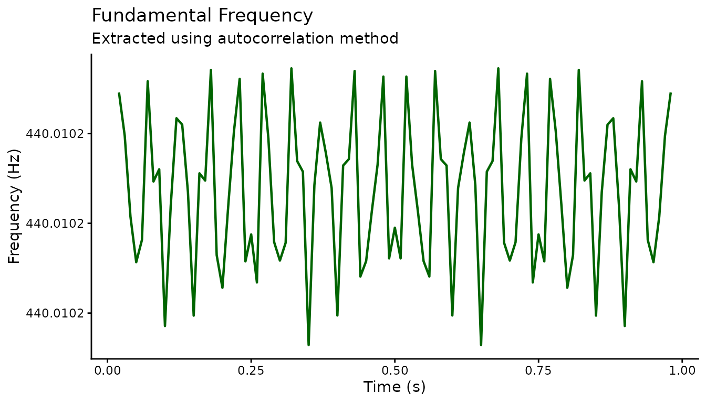
Custom Colors
autoplot(spec, to_freq = 5000) +
scale_fill_viridis_c(option = "magma") +
theme_dark()
#> Scale for fill is already present.
#> Adding another scale for fill, which will replace the existing scale.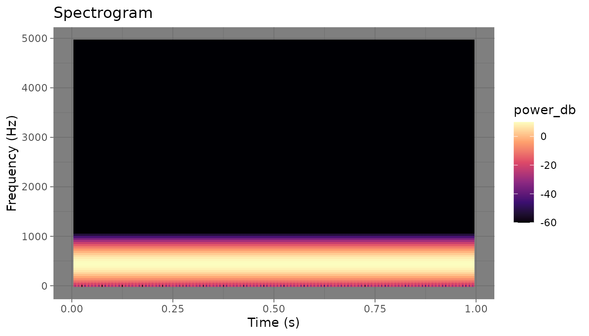
Faceting by Time Windows
# Create intensity plot with reference lines
autoplot(intensity) +
geom_hline(yintercept = c(50, 60, 70), linetype = "dashed", alpha = 0.3) +
annotate("text", x = 0, y = 70, label = "Loud", hjust = 0, size = 3) +
annotate("text", x = 0, y = 50, label = "Quiet", hjust = 0, size = 3)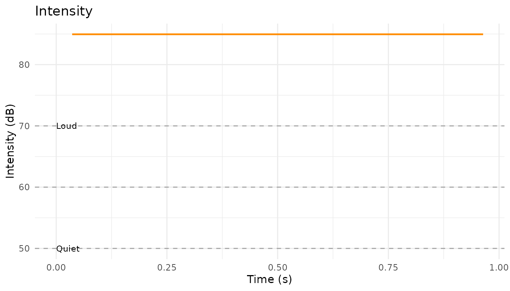
Statistical and Alignment Tools
pladdrr also wraps a few non-acoustic-domain Praat objects used in analysis pipelines: PCA for dimensionality reduction, and DTW for aligning two sounds.
PCA: Scree, Scores, and Combined Plots
autoplot.PCA()’s type argument selects a
scree plot (variance explained per component), a scores plot
(observations projected onto the first two components), or
"both" combined side-by-side via the optional patchwork
package.
set.seed(1)
formant_matrix <- matrix(rnorm(200), nrow = 20)
pca <- pca_from_matrix(formant_matrix)
autoplot(pca, type = "scree")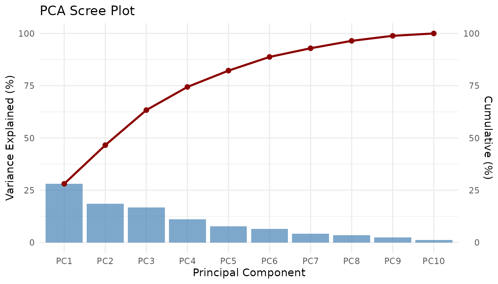
autoplot(pca, type = "scores")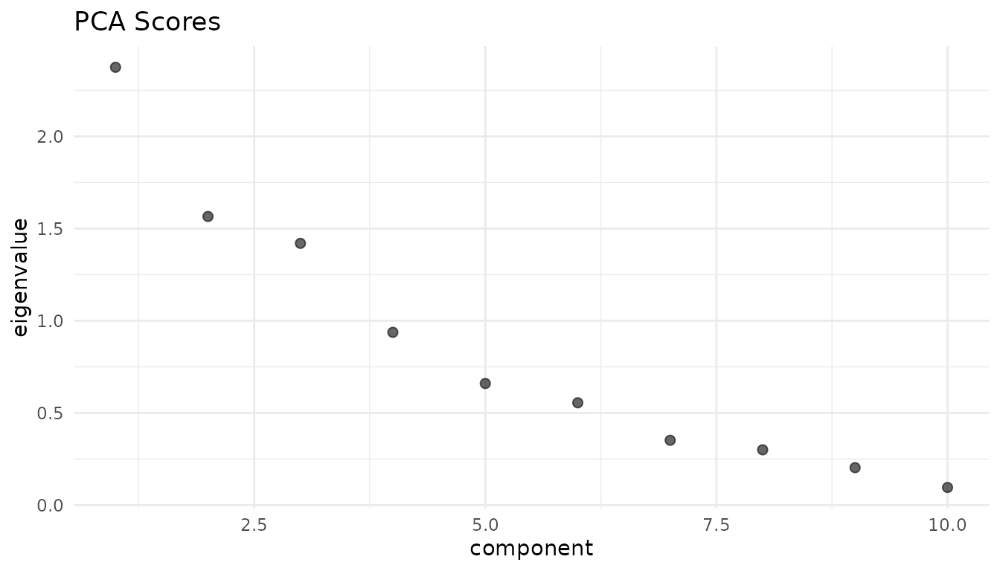
autoplot(pca, type = "both")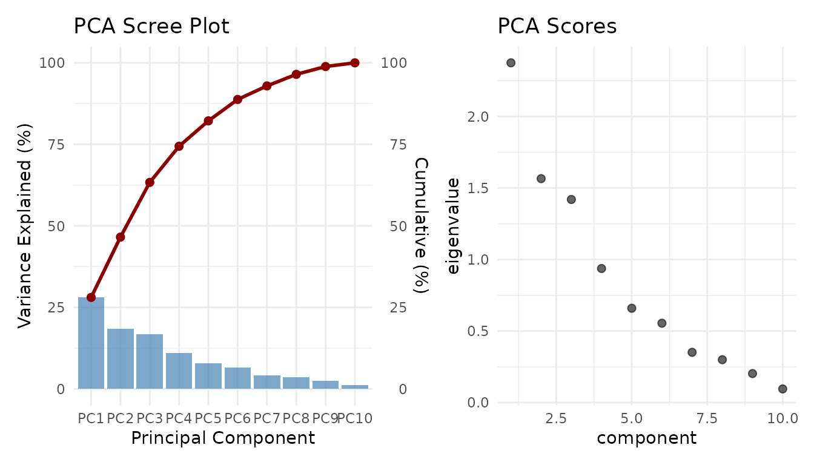
DTW Warping Path
Dynamic Time Warping aligns two sounds (or feature sequences) that
differ in timing — autoplot.DTW() plots the resulting
warping path, and autolayer.DTW() overlays it on an
existing plot.
dtw_sound <- generate_sine_wave(440, 0.1, sampling_rate = 16000)
dtw <- sounds_to_dtw(dtw_sound, dtw_sound)
autoplot(dtw)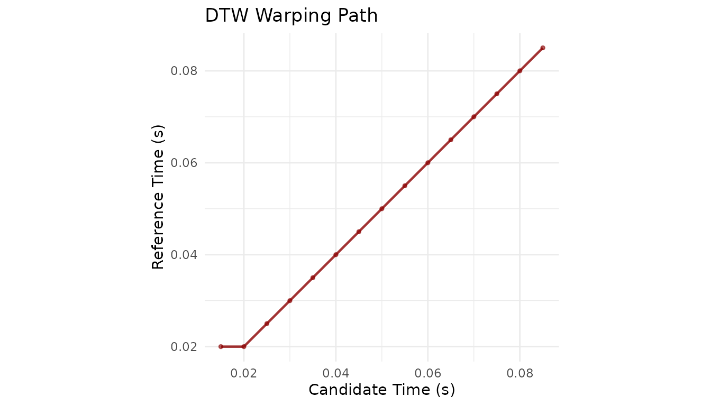
Parameter Reference
Common Parameters
| Parameter | Description | Default |
|---|---|---|
from_time |
Start time (seconds) | NULL (start) |
to_time |
End time (seconds) | NULL (end) |
color |
Line/point color | varies |
Spectrogram Parameters
| Parameter | Description | Default |
|---|---|---|
from_freq |
Min frequency (Hz) | NULL (0) |
to_freq |
Max frequency (Hz) | NULL (Nyquist) |
dynamic_range |
Dynamic range (dB) | 70 |
Comparison with plot() Methods
pladdrr also provides traditional plot() S3 methods.
Here’s when to use each:
| Use Case | Recommended |
|---|---|
| Quick single-object plot |
plot(object) or autoplot(object)
|
| Multi-object composition | autoplot() + autolayer() |
| Maximum customization |
autoplot() (returns ggplot2) |
| Base R graphics pipeline | plot() |
Saving Plots
# Create composed plot
p <- autoplot(spec, to_freq = 5000) +
autolayer(formant, max_formant = 3) +
autolayer(pitch, color = "cyan") +
theme_minimal() +
labs(title = "Acoustic Analysis")
# Save as PDF (vector)
ggsave("analysis.pdf", p, width = 10, height = 6)
# Save as PNG (high-res)
ggsave("analysis.png", p, width = 10, height = 6, dpi = 300)Summary
The autoplot/autolayer pattern provides:
- Composability - Layer multiple acoustic objects
- Consistency - Same interface for all object types
- Customization - Full ggplot2 compatibility
- Publication quality - Vector graphics output
For more visualization options, see
vignette("visualization").